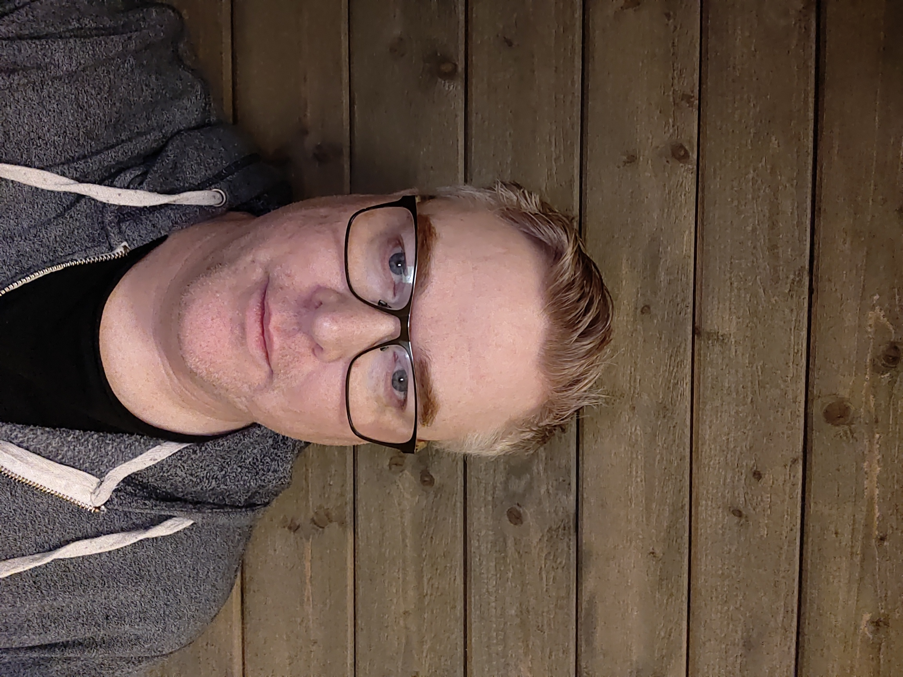

Jag är en IT/OT‑tekniker med över två decenniers erfarenhet inom industriell produktion, drift och tekniska system. Sedan 1999 har jag arbetat i samma fabrik — från Cederroth till Orkla Care — och byggt upp en unik kombination av praktisk maskinkunskap, systemägarskap och teknisk problemlösning.
Mitt fokus ligger på att skapa stabila, säkra och effektiva produktionsmiljöer genom att koppla samman OT‑system, MES, PLC/SCADA och IT‑infrastruktur. Jag brinner för att förena teknik och verksamhet — och göra komplexa system enkla att använda.
IT/OT Technician – Orkla Sverige (2023–nu)
MES‑uppbyggnad, workflow‑design, SQL, SAP‑IDoc, OT‑säkerhet, utbildning av användare.
Assistant Production Supervisor – Orkla Care (2020–2023)
Ansvarig för nattskift, ledarskap, driftstabilitet.
Operational Technology – CPMS Owner (2021–2023)
SQL‑arbete, felsökning, OT‑system.
Machine Operator – Orkla Care / Cederroth (1999–2023)
Maskinoperatör, mekaniker, truckförare, Lean OPUH‑pilot, OPL‑utveckling.
Mechanic
Reparation och underhåll av produktionslinjer.
Forklift Driver
Materialförsörjning, Movex.
Cashier (vägförening)
Fakturor, bokföring, betalningar.
Byggt upp MES‑strukturer, workflow‑kartläggning, utbildning av användare och koppling mot SAP/SQL.
Felsökning av IDoc‑flöden från MES, djupare förståelse av SAP‑integrationer.
Felsökning, datamodellering, OT‑systemintegration och CPMS‑ägarskap.
Segmentering, nätverk, systemhärdning och säker drift av industriella miljöer.
Förståelse för larmhantering, integrationer och modernisering av SCADA‑miljöer.
Operatörsunderhåll, förbättringsarbete och utveckling av OPL‑material.
Reparation, felsökning och underhåll av produktionslinjer.
Materialförsörjning, lagerhantering och Movex‑system.
Ansvar för nattskift, koordinering och driftstabilitet.
Byggt upp MES‑strukturer, kartlagt flöden, skapat workflow och utbildat operatörer.
Utvecklat OPL‑material, drivit operatörsunderhåll och förbättrat arbetsrutiner.
Förbättrad larmhantering, moderniserat SCADA‑gränssnitt och integrerat nya PLC‑system.
Microsoft Intune – Managing Windows 11 (Cornerstone, 2025)
Totalt 33 certifieringar.
Vill du komma i kontakt med mig? Skicka ett meddelande eller lägg till mig på valfri plattform.